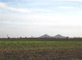
Du cerf-volant Indoor chez les Ch'tis ! Au nord de Lens, en terre minière au milieu des immenses plaines du Nord... mais pas du Haisnaut qui n'a rien à voir avec Haisnes.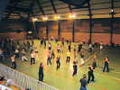
J'arrive vendredi soir, je trouve la salle... Pas encore de cervolistes, mais du fitness, ils en mettent un sacré coup avec, pour les motiver, une sono à les rendre sourds...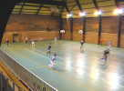
Ensuite du foot en salle, avec 2 bonnes équipes de firmes locales... Bon, ça a attiré beaucoup de monde divers et de voitures à la sono explosive, je vais dormir dans un coin tranquille...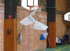
Samedi matin, on monte les CVs et on décore la salle...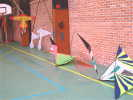
Les Malards sont arrivés de Moissy-Cramayel. Mais non, pas en volant, mais apportés par Frank et Bruno...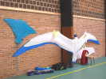
J'ai sorti mon matériel habituel pour mon show où se succèdent Bambou Bird, Manta, Harfang, et Mégoel (pas longtemps, pour Mégoel !). J'ai sorti aussi Bi, oiseau bicolore, mais je préfère le vol de Bambou Bird !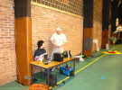
Au milieu, la table avec la sono, un peu faible lors du spectacle, pourtant il n'y avait pas beaucoup de public à couvrir !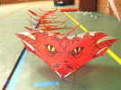
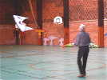
Michel Chantren était venu de Belgique, avec son révo qu'il manie de main de maître, en spécialiste des changements de sens de rotation...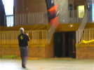
Eric Lincot était venu aussi, de Dieppe, lui. Il a volé en deux-lignes comme ici, mais aussi en monofil, comme avec son Marconi...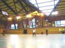
Bruno a, entre autres, pris plaisir à manipuler le pyrodelta des Raz'Mokets à la perche...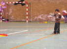
Il n'y a pas eu de match de couper-de-queue, mais les cerfs-volants étaient là, à la disposition des enfants ou des plus grands.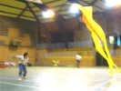
Yann a montré aussi que le pyro, ça pouvait se manier dans son rythme survolté habituel... Mais ça n'est plus vraiment la peine d'avoir un cerf-volant capable de voler !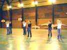
Nous avons eu droit aussi à la participation intégrée d'un groupe de mignonnes danseuses...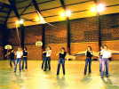
Les cerfs-volants, les oiseaux de Yann, surtout, volaient en même temps au-dessus du ballet, ou plutôt y participaient !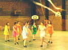
Trois ballets ont été présentés, avec changement de costumes à chaque fois !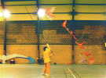
Yann a évidemment présenté son dragon rouge dans ce mouvement effréné dont il a le secret !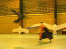
On a pu admirer aussi sur la musique de l'aigle noir de Barbara cette belle prestation plus calme, avec un cerf-volant qui vole et des mouvements de rotation intéressants et harmonieux...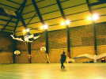
Et aussi un beau vol de style Men-In-Black avec ce pyro Noir et Blanc et un cervoliste en costard et chapeau...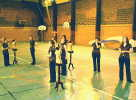
Le dernier ballet, avec des tenues chics et des mannequins habillés de fourrure... Ca nous a tellement plu qu'on a demandé et obtenu un bis après les numéros des cervolistes.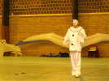
Michel a présenté son numéro de Robot-Pierrot qui ne prend pas une ride et plaît toujours...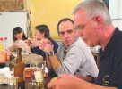
A midi, nous avions été déjeuner au Mac-Do (publicité gratuite, on a payé, alors...). Mais le soir, pizzas offertes, le camion est sur le parking, pas loin à aller et elles étaient bonnes... Ensuite, dodo dans le gymnase (4h du matin...) ou à l'hôtel ou pour moi dans mon fourgon, même pas froid...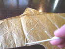
Dimanche matin, entraînements divers, certains partent déjà et on ne verra pas un spectateur de la journée... (mais qui a fait la Com ? Personne, sans doute !) Dans les rencontres, Bambou Bird ne fait pas le poids, et je dois réparer une légère déchirure... Colle à bois et séchage, je revole dans une demi-heure !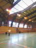
D'ailleurs, pas mal de monde a voulu l'essayer, il faut seulement ne le confier qu'à des mains averties et ne pas le laisser kidnapper par ceux qui en ont envie...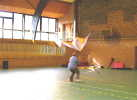
Bruno continue à travailler avec son Amazing, à chaque fois que je le vois, je trouve qu'il a fait des progrès... J'ai essayé un peu, mais je m'épuise vite, je ne sais pas agir économiquement !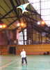
Astrid travaille son numéro avec son hirondelle à la canne à pêche... Je le trouve aussi en progrès, avec un vrai vol du cerf-volant qui plane harmonieusement au lieu d'être traîné au bout de la ficelle !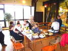
Au déjeuner, sandwichs, jambon beurre ou pâté... Bon, en entrée un petit jaune et ensuite un peu de bière pour faire passer, bien sûr, la journée ne sera pas forcenée ! L'homme en blanc assis sur la table est venu de Strasbourg, faut le faire !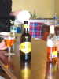
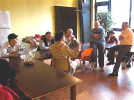
Alain, le Délégué à la Fédé est venu prendre la température et discuter. Mais on n'a pas réussi à le faire voler ! Dimanche après-midi, pas de public, pas de spectacle, les CVistes partent progressivement. Je suis le dernier à quitter vers 15 h, triste !